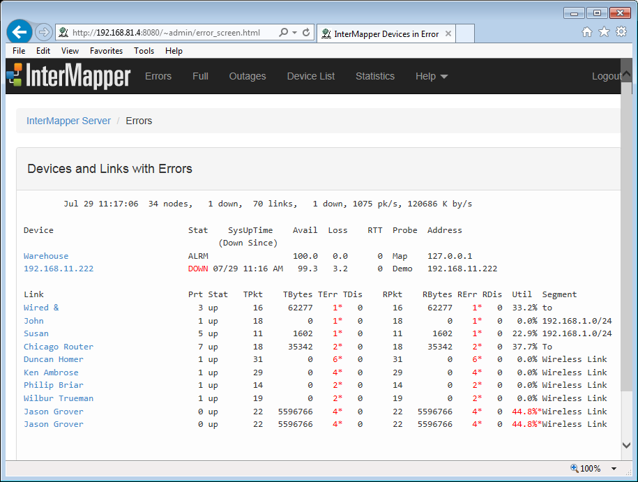
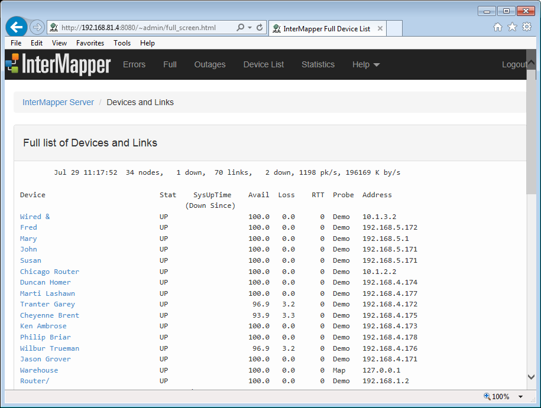

The Error and Full Pages
Use the Error Page to view devices, networks, and links that are down, or in alarm or warning states.
- If you are an InterMapper administrator, this page appears by default when you first connect your browser to the InterMapper web server.
- If you are not an administrator, the Error page is available only if you are a member of the “FullWebAccess” group.
- By default you are directed to the first map (alphabetically) in the map list to which you have access.
Use the Full Page to view all devices, networks, and links
being monitored by InterMapper, not just those with problems.
Both the Error and Full web pages have the same format, shown below.
-
Click a link in the left column of either page to view detailed information about the
link, device, or network.
The Home Page topic shows typical
Device and Network Status.

The InterMapper Errors page

The InterMapper Full page.
Viewing the Summary Information
The top line shows a summary of items being monitored in all open maps.
They are, in order:
- date and time
the page was generated
- number of nodes being
monitored
- number of devices currently
shown as down
- number of links
being monitored
- number of links
currently shown as down
- total packets per second
entering the network
- total bytes per second
entering the network
Viewing Device Status
The first detailed section of the page shows devices that are
down, or are in alarm or warning states. The Device section shows:
- Device - device
name (click the link for more information)
- Stat - device status
- SysUptime - device
uptime
- Avail - availability
- Loss - packet loss
- RTT - round-trip time
- Probe - probe type
- Address - network
address
Viewing Networks and Link Status
The second detailed section of the page shows networks and links
that are down, or are in alarm or warning states. The Link section
shows:
- Link - device name
(click the link for more information)
- Prt - device port
number
- Stat - device status
- TPkt, TBytes, TErr,
TDis - transmit information (transmitted packets and bytes per second,
transmit errors and discards per minute)
- RPkt, RBytes, RErr, RDis - receive information
(received packets and bytes per second, received errors and discards per
minute)
- Util - network
utilization
- Segment - segment
name (if any)